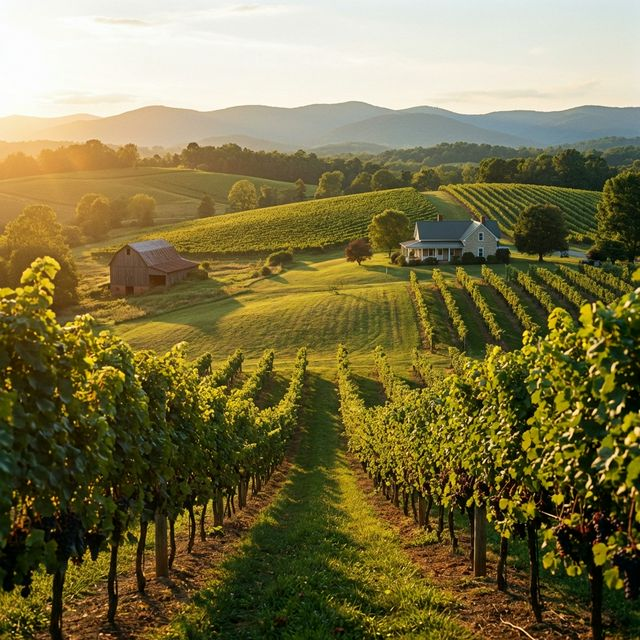
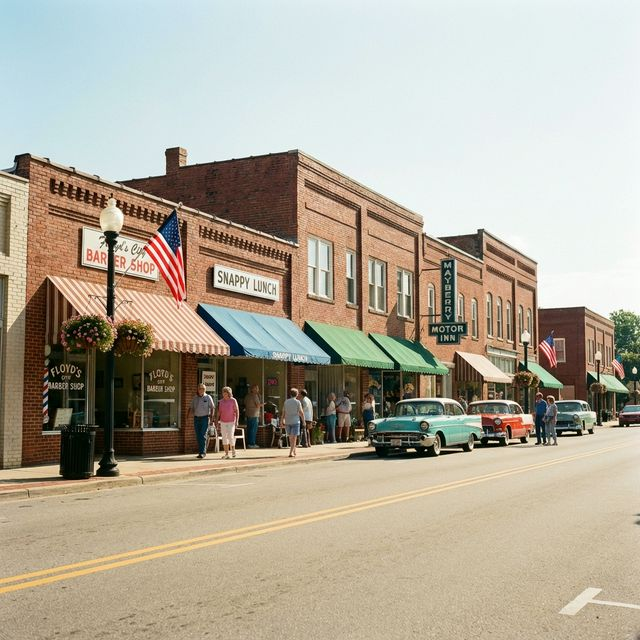
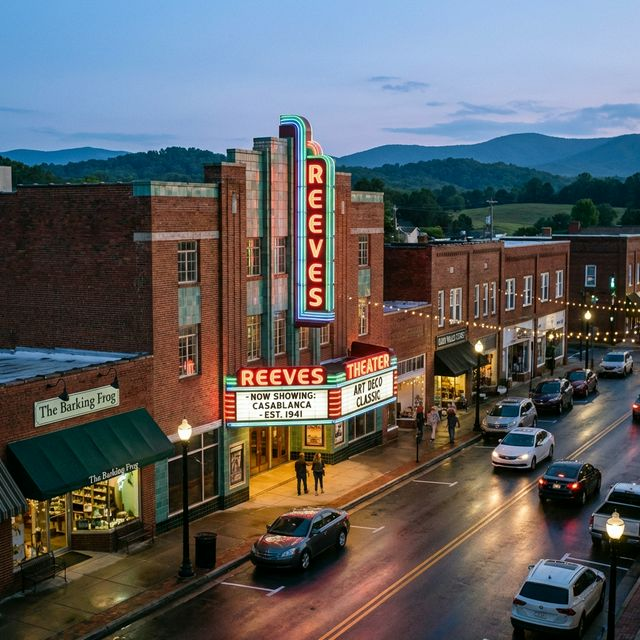
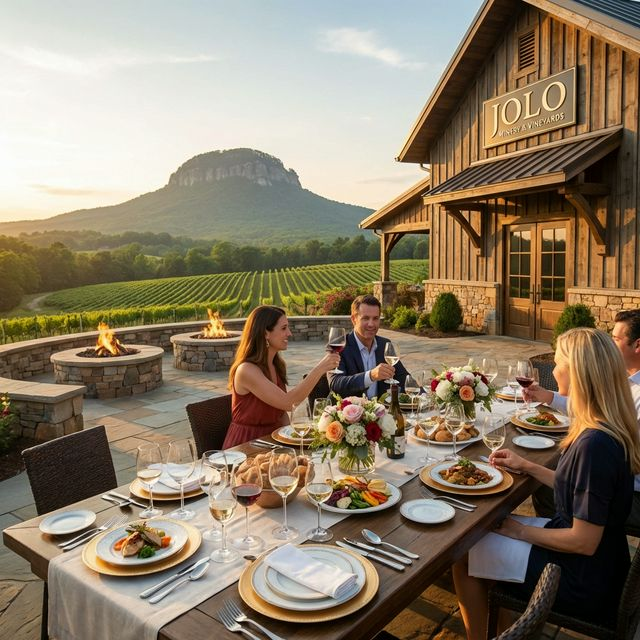
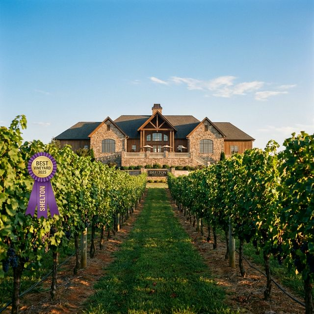
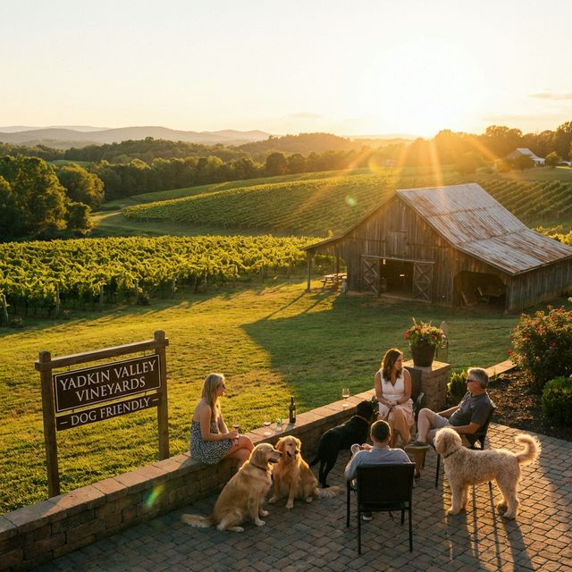
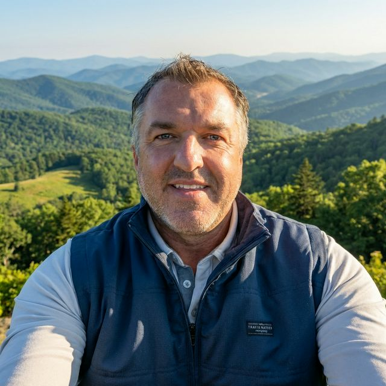

Surry County, North Carolina
More than a place.
A place to call home.
Explore Pilot Mountain, historic Mount Airy, and the best of the Yadkin Valley.
Explore Our CommunityLocal places. Friendly faces. Your community.
Iconic Destinations
From towering peaks to charming streets, Surry County offers unforgettable experiences.
Pilot Mountain State Park
Hike, climb, and take in panoramic views from one of NC's most iconic geological formations.
Learn More
Food & DrinkYadkin Valley Wine Region
Surry County is the heart of NC's premier wine country, featuring award-winning vineyards.
Explore Wineries
Culture & HistoryHistoric Mount Airy
Step back in time in the hometown of Andy Griffith. Enjoy Mayberry charm and rich musical heritage.
Visit Main Street
Trails & ArtsExplore Elkin
NC's premier Trail Town. Live music at the Reeves Theater and access to three major trail systems.
View TownYadkin Valley Wineries
Surry County anchors the Yadkin Valley AVA — North Carolina's first federally recognized wine region (2003), with 40+ vineyards to explore.

JOLO Winery & Vineyards
An award-winning estate winery in Pilot Mountain, known for its acclaimed on-site restaurant and sweeping mountain views.
Visit JOLO
Shelton Vineyards
One of NC's largest family-owned estate wineries in Dobson — the vineyard whose petition helped establish the Yadkin Valley AVA.
Visit Shelton
Round Peak Vineyards
A relaxed, welcoming Mount Airy vineyard with mountain views, live music weekends, and a laid-back tasting-room vibe.
Visit Round PeakCommunity Pulse
Stay connected with what makes Surry County special.

Curated by Bill Layne
Surry County Local Expert & Insurance Agent
With over 20 years living in the Surry County area, Bill brings authentic, first-hand Experience to this guide. This page is fact-checked and maintained to ensure the highest Trustworthiness and Expertise regarding local attractions.
Last reviewed & updated: July 2026
Events & Festivals
Surry County knows how to celebrate — here are the can't-miss annual gatherings.
Autumn Leaves Festival
Oct 9–11, 2026 · Free
One of the Southeast's top fall festivals — 200+ vendors, handmade crafts, regional food, and live music in Downtown Mount Airy.
Mayberry Days
Annual · Mount Airy
A beloved celebration of The Andy Griffith Show, with tribute artists, parades, and classic Mayberry fun downtown.
Yadkin Valley Wine Season
Spring & Fall
Harvest festivals, live music, and tasting events across 40+ vineyards throughout the growing season.
Elkin Markets & Festivals
Seasonal
The Elkin Farmers Market, Pumpkin Festival, and Reeves Theater shows. See Elkin savings & events.
Surry County Resources
Everything you need to explore, enjoy, and settle into life in the Surry County foothills.
Parks, Trails & Outdoors
Pilot Mountain & Stone Mountain State Parks, the Yadkin River, the Mountains-to-Sea Trail, and Elkin's trail network.
Elkin parks & trailsExplore the Towns
Each town has its own character — dig into our local guides:
Wine & Dine
Tour the Yadkin Valley wine trail, then find local grocery, gas, and restaurant deals in Elkin.
New to the Area?
Handle the NC DMV, know the state insurance rules, and get local auto & home coverage.
Surry County FAQ
Quick answers about our towns, wineries, and attractions.
What is Surry County, NC known for?
Surry County is best known for Pilot Mountain, historic Mount Airy — the hometown of Andy Griffith and widely regarded as the inspiration for Mayberry — and the Yadkin Valley, North Carolina's first wine region.
Is Mount Airy really Mayberry?
Mount Airy is Andy Griffith's hometown and is widely considered the inspiration for the fictional town of Mayberry. Downtown embraces the connection with Mayberry-themed attractions, squad-car tours, and classic diners.
What wineries are in Surry County?
Surry County anchors the Yadkin Valley AVA — North Carolina's first federally recognized wine region (2003) — with 40+ vineyards. Standouts include Shelton Vineyards in Dobson, JOLO Winery in Pilot Mountain, and Round Peak Vineyards in Mount Airy.
What is the county seat of Surry County?
Dobson is the county seat. Mount Airy is the largest town, with Elkin and Pilot Mountain rounding out the county's main communities.
How tall is Pilot Mountain?
Pilot Mountain rises to 2,421 feet above sea level. Its distinctive rounded knob is the centerpiece of Pilot Mountain State Park, a popular spot for hiking, rock climbing, and panoramic foothill views.
What are the best things to do in Surry County?
Hike or climb Pilot Mountain, tour the Yadkin Valley wineries, explore Mayberry in Mount Airy, and walk the trails in Elkin with a show at the historic Reeves Theater.